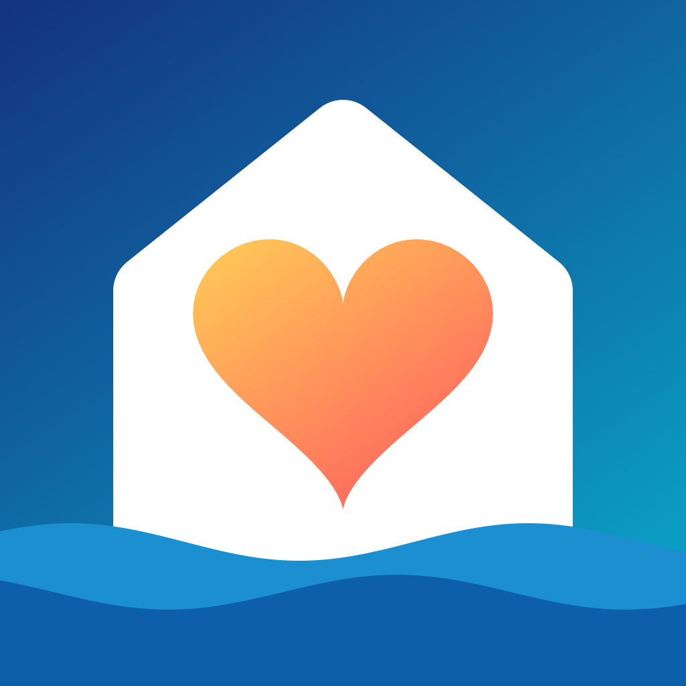

Heimathafen
Dienste, Kalender und Kinderbetreuung an einem Ort.
Gemeinsam organisieren
Heimathafen hilft Familien dabei, Schichtdienste, gemeinsame Termine und Betreuung zu koordinieren. Die App funktioniert lokal auf deinem Gerät; der Abgleich über iCloud ist freiwillig.
Privat entwickelt
- keine Werbung und kein Tracking
- kein eigenes Benutzerkonto und kein eigener Server
- optionaler Abgleich über Apples iCloud
- einstellbare Sichtbarkeit innerhalb der Familie